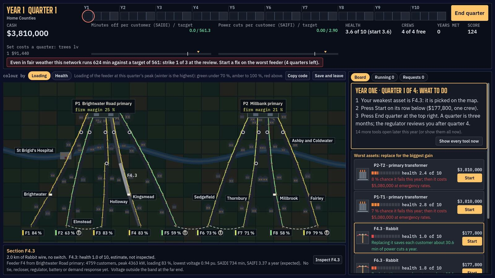
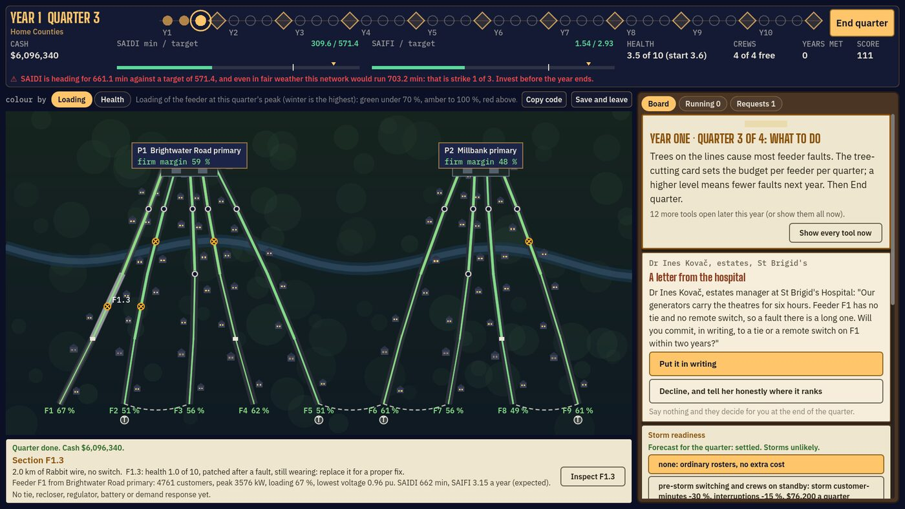

Home Counties
A balanced district: some old kit, some growth, ordinary weather.

Wiki / Career
Ten years, one quarter at a time, as the district engineer for two primary substations and nine feeders: about 40,000 customers in Home Counties, 51,000 in Harbour City, 16,000 on High Moor.


A letter from the hospital
Dr Ines Kovač, estates manager at St Brigid's Hospital: "Our generators carry the theatres for six hours. Feeder F1 has no tie and no remote switch, so a fault there is a long one. Will you commit, in writing, to a tie or a remote switch on F1 within two years?"
Each answer shows its cost before you press it. A promise in writing comes due two years later, and the people remember the answers.

A career starts in one district. Each pushes a different pressure, and its targets come from its own expected performance, so every one can be won, though not with the same plan. Each ISO week also has one district and seed, the same for everyone.
A balanced district: some old kit, some growth, ordinary weather.
Gales off the sea: storms come 1.7 times as often. Reclosers, ties, automation and trees win here.
New estates and EV chargers: connection requests 1.6 times as often, faster growth. Capacity, and knowing when to say no.
Every cable, transformer and switchboard is 8 years older than usual. Inspect, then replace in the right order.
Rooftop solar on every street and summer heatwaves: midday voltage runs high, and complaints cost six times as much.
An efficiency challenge: 4 % less revenue, 5 % less to run the network, and little cash to start. Cheap fixes first, and stay out of debt.
Lines through woodland: trees start much closer, and storms come more often. The tree-cutting budget matters.
Dense streets, all underground: cable faults are rare but take most of a day to find and joint. No trees, few storm faults. Ties and remote switching restore it; auto-reclose stays off on cable.

Long lines over open hills to farms and villages, snow and ice in winter. One substation sits far up the moor, so its feeders start with a long trunk. Most faults are transient: reclosers pay here. Watch the voltage at the far ends.

Each quarter you pick from a board. Every card shows what it does to expected SAIDI, loading and firm margin before you buy it.
| Reconductor | A bigger conductor on one section (a thicker line, or a bigger cable under the street): less drop, less loss, more headroom, and a new asset. |
|---|---|
| New feeder | A new feeder out of the same primary takes half the customers of the feeder you pick. |
| New transformer | One more unit at a primary: firm capacity for the day a unit fails. |
| Tie to a neighbour | A normally-open tie lets the healthy part of the feeder be fed from next door during a fault. |
| Remote switch | The control room can open it in minutes instead of a crew in an hour. |
| Recloser | Clears passing faults (branches, lightning) without a sustained outage. |
| Deep tree clearance | One deep clearance of the corridor; trees cause many storm faults. |
| Storm hardening | Covered conductor, wider clearance and stronger poles on the exposed spans: storms fault this feeder far less. |
| Replace asset | A new line section, transformer or switchboard: health back to 10. |
| Voltage regulator | Holds the far end of a long feeder inside the voltage band. |
| Battery | Shaves the evening peak of one feeder. |
| Demand response | A contract: big users cut load at the peak. Paid every quarter, not an asset. |
| Chief Engineer | Ten years done. Targets met in most years and the network is healthier than you found it: Chief Engineer. |
|---|---|
| Steady | Ten years done. The lights stayed on; the network got older. A steady career. |
| Bailed out | The company ran past its credit limit. The owners bailed it out and your career ends here. |
| Licence revoked | Three years in a row of heavy reliability fines on a network that could not meet its targets even in fair weather: the regulator revoked the licence. |